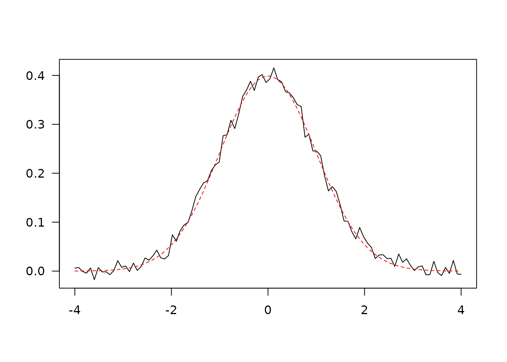
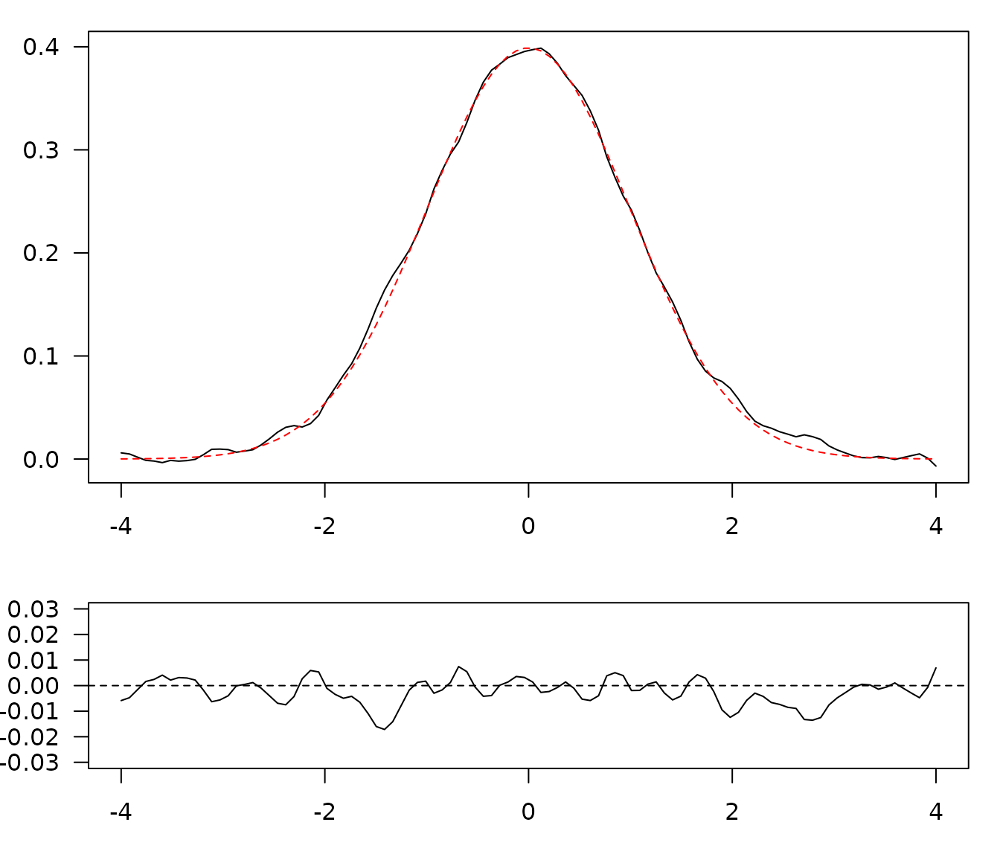
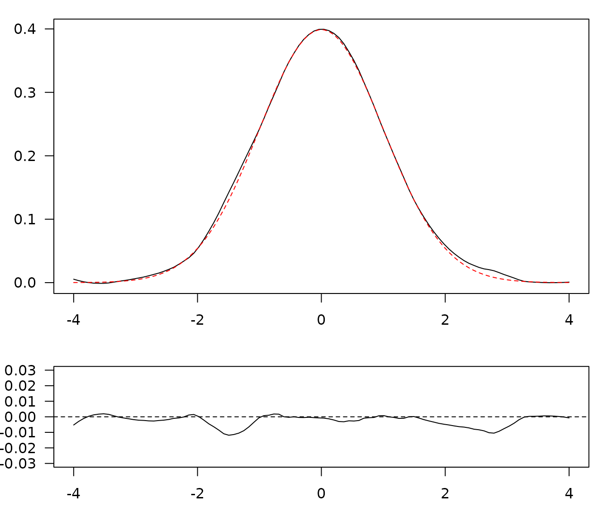
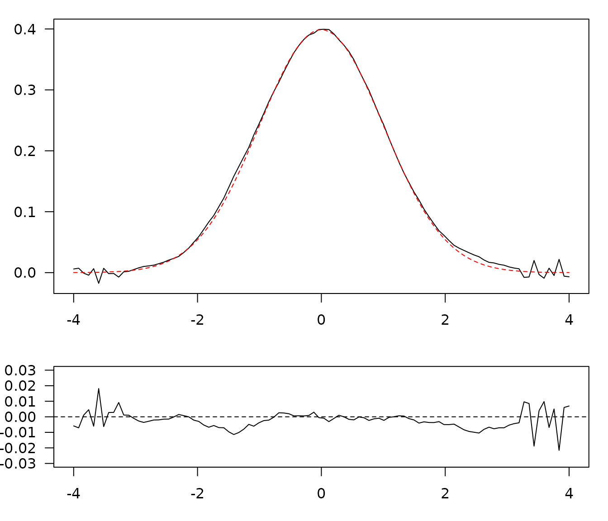

## Simulate data
set.seed(12345)
x <- seq(-4, 4, length = 100)
y <- dnorm(x)
z <- y + rnorm(100, mean = 0, sd = 0.01) # Add some noise
## Plot raw data
plot(x, z, type = "l", xlab = "", ylab = "", las = 1)
lines(x, y, type = "l", lty = 2, col = "red")
Simulated data.
Rectangular smoothing
unweighted <- smooth_rectangular(x, z, m = 3)
par(mar = c(3, 3, 1, 1) + 0.1, las = 1)
layout(matrix(c(1, 2), nrow = 2, ncol = 1), heights = c(2, 1))
plot(unweighted, type = "l", xlab = "", ylab = "")
lines(x, y, type = "l", lty = 2, col = "red")
plot(x, y - unweighted$y, ylim = c(-0.03, 0.03), type = "l", xlab = "", ylab = "")
abline(h = 0, lty = 2)Rectangular smoothing.
Triangular smoothing
weighted <- smooth_triangular(x, z, m = 5)
par(mar = c(3, 3, 1, 1) + 0.1, las = 1)
layout(matrix(c(1, 2), nrow = 2, ncol = 1), heights = c(2, 1))
plot(weighted, type = "l", xlab = "", ylab = "")
lines(x, y, type = "l", lty = 2, col = "red")
plot(x, y - weighted$y, ylim = c(-0.03, 0.03), type = "l", xlab = "", ylab = "")
abline(h = 0, lty = 2)
Triangular smoothing.
Loess smoothing
loess <- smooth_loess(x, z, span = 0.2)
par(mar = c(3, 3, 1, 1) + 0.1, las = 1)
layout(matrix(c(1, 2), nrow = 2, ncol = 1), heights = c(2, 1))
plot(loess, type = "l", xlab = "", ylab = "")
lines(x, y, type = "l", lty = 2, col = "red")
plot(x, y - loess$y, ylim = c(-0.03, 0.03), type = "l", xlab = "", ylab = "")
abline(h = 0, lty = 2)
Loess smoothing.
Savitzky-Golay filter
savitzky <- smooth_savitzky(x, z, m = 21, p = 2)
par(mar = c(3, 3, 1, 1) + 0.1, las = 1)
layout(matrix(c(1, 2), nrow = 2, ncol = 1), heights = c(2, 1))
plot(savitzky, type = "l", xlab = "", ylab = "")
lines(x, y, type = "l", lty = 2, col = "red")
plot(x, y - savitzky$y, ylim = c(-0.03, 0.03), type = "l", xlab = "", ylab = "")
abline(h = 0, lty = 2)
Savitzky–Golay filter.
Whittaker smoothing
whittaker <- smooth_whittaker(x, z, lambda = 1000, d = 3, sparse = TRUE)
par(mar = c(3, 3, 1, 1) + 0.1, las = 1)
layout(matrix(c(1, 2), nrow = 2, ncol = 1), heights = c(2, 1))
plot(whittaker, type = "l", xlab = "", ylab = "")
lines(x, y, type = "l", lty = 2, col = "red")
plot(x, y - whittaker$y, ylim = c(-0.03, 0.03), type = "l", xlab = "", ylab = "")
abline(h = 0, lty = 2)Whittaker smoothing.